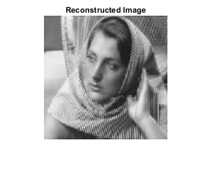
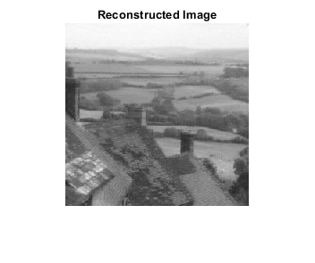

Contents
- CS 754 : Advanced Image Processing - Assignment 1
- 2 (a) Preparing Image
- 2 (b) ISTA on barbara256: parameters, matrices
- 2 (b) ISTA on barbara256: loop over patches
- 2 (b) ISTA on barbara256: reconstruction results
- 2 (b) ISTA on goldhill: preparation
- 2 (b) ISTA on goldhill: loop over patches
- 2 (b) ISTA on goldhill: results
CS 754 : Advanced Image Processing - Assignment 1
Karan Taneja - 15D070022
Sucheta Ravikanti- 1600401001
clear; clc;
2 (a) Preparing Image
sigma = sqrt(4); image = double(imread('barbara256.png')); noise = randn(size(image))*sigma; image = image + noise; [height, width] = size(image); imshow(image/max(image, [], 'all')); title("Noisy image") hold off
2 (b) ISTA on barbara256: parameters, matrices
sensing_matrix = randn(32, 64);
dct_matrix = kron(dctmtx(8), dctmtx(8));
A_matrix = sensing_matrix * dct_matrix';
patch_size = 8; patch_stride = patch_size/2;
padded_height = height+2*patch_stride;
padded_width = width+2*patch_stride;
alpha = eigs(A_matrix' * A_matrix, 1) * 1.05;
lambda = 1;
epsilon = 1e-3;
padded_image = zeros(padded_height, padded_width);
padded_image(patch_stride+1:end-patch_stride, ...
patch_stride+1:end-patch_stride) = image;
2 (b) ISTA on barbara256: loop over patches
padded_image_recon = zeros(padded_height, padded_width); tic for phid = 1:patch_stride:padded_height-patch_stride for pwid = 1:patch_stride:padded_width-patch_stride % fprintf("x = %d, y = %d \n", phid, pwid) current_xi = padded_image(phid:phid+patch_size-1, ... pwid:pwid+patch_size-1); current_xi = current_xi(:); current_yi = sensing_matrix * current_xi; current_theta_i_recon = ista_reconstruction(current_yi, ... A_matrix, alpha, lambda, epsilon); current_xi_recon = dct_matrix' * current_theta_i_recon; current_xi_recon = reshape(current_xi_recon, patch_size, ... patch_size); % curr_rrmse = norm(current_xi(:)-current_xi_recon(:)) / ... % norm(current_xi(:)) padded_image_recon(phid:phid+patch_size-1, ... pwid:pwid+patch_size-1) = padded_image_recon(phid: ... phid+patch_size-1, pwid:pwid+patch_size-1) + current_xi_recon; fid = fopen('log.txt', 'a+'); fprintf(fid, 'x = %d y = %d \n', phid, pwid); fclose(fid); end end toc
Elapsed time is 2955.161043 seconds.
2 (b) ISTA on barbara256: reconstruction results
padded_image_recon = padded_image_recon ./ 4; image_recon = padded_image_recon(patch_stride+1:end-patch_stride, ... patch_stride+1:end-patch_stride); imshow(image_recon/max(image_recon, [], 'all')); title("Reconstructed Image") hold off rrmse = norm(image(:)-image_recon(:)) / norm(image(:)); rrmse
rrmse =
0.0732
 2 (b) ISTA on goldhill: preparation
clear; clc; sigma = sqrt(4); image = double(imread('goldhill.png')); image = image(1:256,1:256); noise = randn(size(image))*sigma; image = image + noise; [height, width] = size(image); imshow(image/max(image, [], 'all')); title("Noisy image") hold off sensing_matrix = randn(32, 64); dct_matrix = kron(dctmtx(8), dctmtx(8)); A_matrix = sensing_matrix * dct_matrix'; patch_size = 8; patch_stride = patch_size/2; padded_height = height+2*patch_stride; padded_width = width+2*patch_stride; alpha = eigs(A_matrix' * A_matrix, 1) * 1.05; lambda = 1; epsilon = 1e-3; padded_image = zeros(padded_height, padded_width); padded_image(patch_stride+1:end-patch_stride, ... patch_stride+1:end-patch_stride) = image; padded_image_recon = zeros(padded_height, padded_width);

2 (b) ISTA on goldhill: loop over patches
tic for phid = 1:patch_stride:padded_height-patch_stride for pwid = 1:patch_stride:padded_width-patch_stride % sprintf("x = %d, y = %d", phid, pwid) current_xi = padded_image(phid:phid+patch_size-1, ... pwid:pwid+patch_size-1); current_xi = current_xi(:); current_yi = sensing_matrix * current_xi; current_theta_i_recon = ista_reconstruction(current_yi, ... A_matrix, alpha, lambda, epsilon); current_xi_recon = dct_matrix' * current_theta_i_recon; current_xi_recon = reshape(current_xi_recon, patch_size, ... patch_size); % curr_rrmse = norm(current_xi(:)-current_xi_recon(:)) / ... % norm(current_xi(:)) padded_image_recon(phid:phid+patch_size-1, ... pwid:pwid+patch_size-1) = padded_image_recon(phid: ... phid+patch_size-1, pwid:pwid+patch_size-1) + current_xi_recon; fid = fopen('log.txt', 'a+'); fprintf(fid, 'x = %d y = %d \n', phid, pwid); fclose(fid); end end toc
Elapsed time is 1883.123293 seconds.
2 (b) ISTA on goldhill: results
padded_image_recon = padded_image_recon ./ 4; image_recon = padded_image_recon(patch_stride+1:end-patch_stride, ... patch_stride+1:end-patch_stride); imshow(image_recon/max(image_recon, [], 'all')); title("Reconstructed Image") hold off rrmse = norm(image(:)-image_recon(:)) / norm(image(:)); rrmse
rrmse =
0.0432
